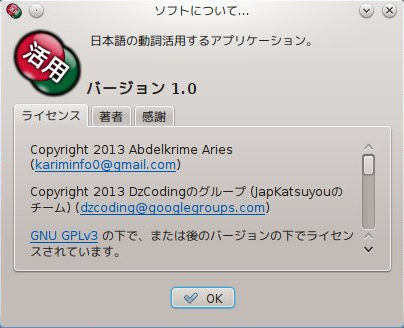
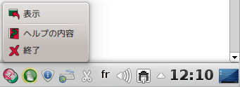

を押して下さい。
次の3つのファイル形式があります。
を押して下さい。
次の3つのファイル形式があります。
このアプリケーションでは、日本語の動詞活用に日本語を学ぶ人を手伝うために、我々はできるだけ多くの機能をあげたい。 次は、このアプリケーションのバージョンに与えられる機能です。
あなたは、いくつかの機能が欲しい場合は、我々のユーザグループメーリングリストでお問い合わせます dzcoding@googlegroups.comあなたは、動詞があることを確認したい場合は、この動詞の終止形を入力して、それを活用して下さい。 この動詞が見つかった場合は、種類と動詞活用を見ることができます。 そうしないと、動詞が存在しないことを通知するメッセージが表示されます。
動詞は、終止形でなければなりません、覚えておいてください。 例えば： 食べる、飲む、行く、信じる、死ぬ、見る、泳ぐ、遊ぶ、出す、立つ、合う、... また、動作を表す名詞を活用ために、それの後に「する」を書いて下さい。 例えば： 勉強する、選択する、連絡する、... 実は、それはただ「する」の動詞活用です。 動詞を入力すると、キーボードでEnterキーを押して、または「活用」のボタンを押して下さい。
動詞活用の結果が3つの表にグループ化されている。 分類は、動詞活用の複雑さと使用事例に基づいています。
これは、動詞の共役を覚えるために日本を学ぶ人によって使用されます。 あなたは日本人のように動詞活用を学習したい場合は、これは正しい選択です。
国語動詞活用と同じですが、「t」の基本的な形が含まれています。 この動詞活用の種類は、基本的な形を提供します。複雑な形を得るために、基本的な形と接尾語を使用します。 この基本的な形は、未然形と仮定形と命令形と連用形と終止形と連体形です。
複雑な形は基本的な形と接尾語から生成されます。 複合の動詞活用は、次の3つの項目に従います。
あなたは動詞活用の結果を保存することができます。それを印刷したり、ファイルにエクスポートしたり出来ます。 動詞活用したら、「ファイル」メニューから、またはツール·バーから、2つの機能を実行することができます。 設定で、あなたは保存しますかどのテーブルを選択することができます。
動詞活用の結果をエクスポートするために、「内容のエクスポート」メニュー、またはあのボタン
を押して下さい。
次の3つのファイル形式があります。
動詞活用の結果を印刷するために、「印刷」メニュー、またはあのボタン
 を押して下さい。
を押して下さい。
あなたは、動詞活用のテーブルのサイズを制御することができる。
「表示->ズーム->ズームイン」メニューまたはあのボタン
 を押して、ズームインすることができます。
を押して、ズームインすることができます。
「表示->ズーム->ズームアウト」メニューまたはあのボタン
 を押して、ズームインすることができます。
を押して、ズームインすることができます。
「表示->ズーム->通常のサイズ」メニューまたはあのボタン
 を押して、通常のサイズに戻すことができます。
を押して、通常のサイズに戻すことができます。
ここは、アプリケーションの設定をコントロールすることができる所です。
「編集->設定」メニューまたはあのボタン
 を押して、「設定」ダイアログボックスを得ることができます。
ユーザーインターフェースと内容の輸出：設定は、2グループに分かれています。
を押して、「設定」ダイアログボックスを得ることができます。
ユーザーインターフェースと内容の輸出：設定は、2グループに分かれています。
アプリケーションの言語を選択することができます。 [OK]ボタンを押すと、言語がすぐに変更されます。
このパネルでは、保存したいコンテンツ（コンテンツのエクスポートまたは印刷）を制御することができます。 エクスポートされたテーブルを選択することができますし、それらはスタイルがありますかどうか。
「ヘルプ->ヘルプの内容」メニューまたはあのボタン
 を押して、このヘルプを見つけることができます。
を押して、このヘルプを見つけることができます。
JapKatsuyouのソフトについてお知りになりたい場合は、
「ヘルプ->ソフトについて」メニューまたはあのボタン
 を押して下さい。
を押して下さい。

「ファイル->非表示」メニューまたは閉じるボタンを押して、トレイにアプリケーションを閉じることができます。
アプリケーションを終了する場合は、「ファイル->終了」メニューまたはあのボタン
 を押して下さい。
を押して下さい。
トレイからアプリケーションを復元する場合は、トレイアイコンの上で、左クリックをクリックしたり、右クリックをクリックし、あのボタン
 を押したりします。
を押したりします。
